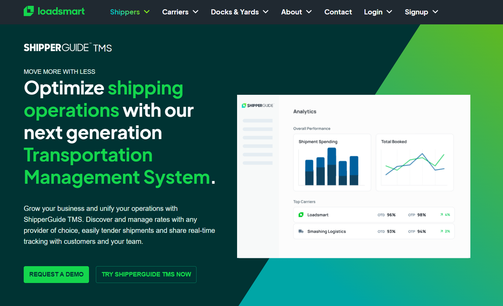
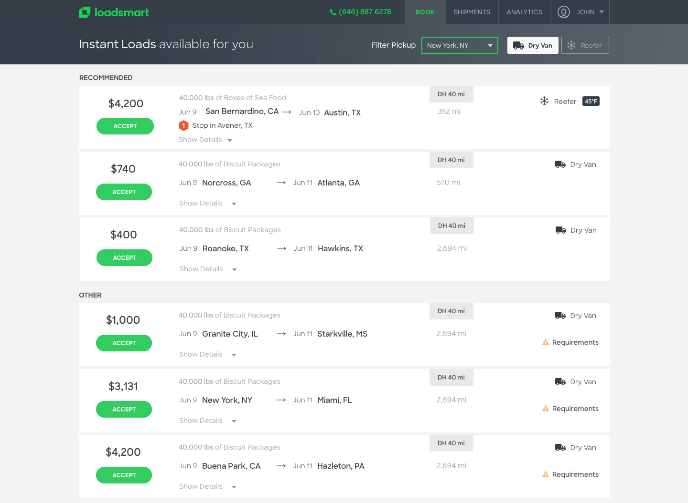
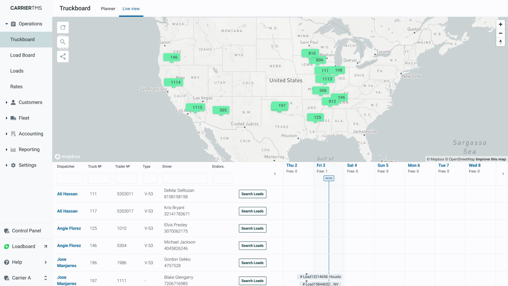
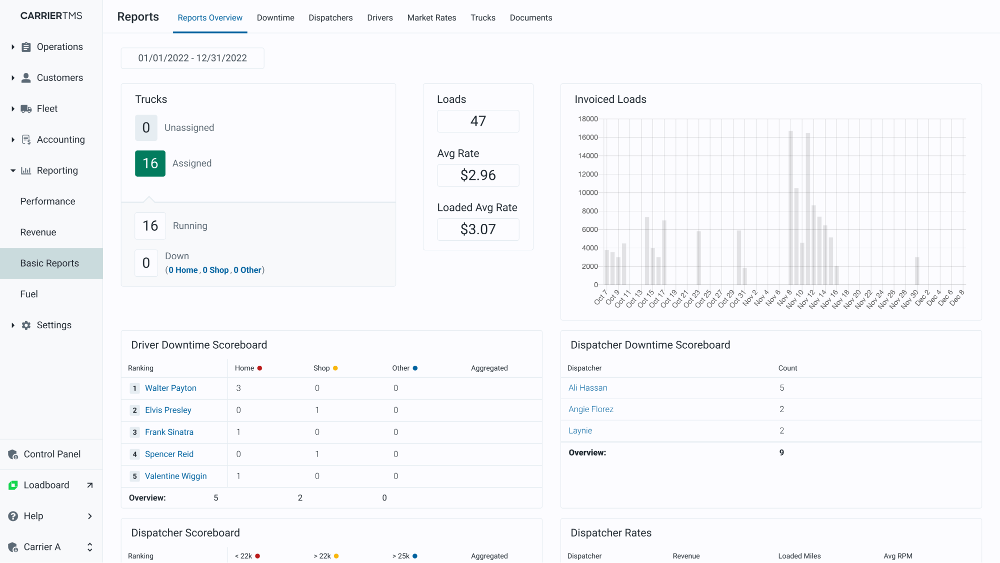

Loadsmart is a technology company in the logistics and transportation industry, known for leveraging advanced technologies to optimize freight transportation. Utilizing a combination of artificial intelligence, machine learning, and data analytics, Loadsmart aims to streamline the freight booking process for shippers and carriers. Their platform provides an automated, efficient, and cost-effective way to match shipments with available truck capacity. This approach not only helps in reducing shipping costs and improving operational efficiency for their clients but also contributes to minimizing empty miles, thus having a positive impact on environmental sustainability. By integrating with various transportation management systems, Loadsmart facilitates a more seamless and connected freight industry.
As a Senior Developer at Loadsmart, I spearheaded numerous initiatives that significantly improved the company's technological capabilities and business operations. One of my key achievements was leading the development of the RFP Guide. This innovative tool assists shippers in making informed decisions when selecting carriers. The RFP Guide has been widely recognized for its substantial impact on business operations, streamlining processes, and enhancing client satisfaction. My role in this project honed my leadership skills and deepened my understanding of the logistics industry’s unique challenges and opportunities.
In my tenure, I also established comprehensive documentation for Mixpanel events. This initiative was pivotal in ensuring the accurate and consistent tracking of user interactions and system events. By doing so, I contributed to a more data-driven approach in product development and decision-making. This work not only improved the reliability of our data analytics but also facilitated better insights into user behavior, leading to more informed strategic decisions and enhancements in our software offerings.
A significant technical contribution I made was introducing a shift from Redux to React-query for API calls. This transition was instrumental in enhancing the efficiency of data fetching and the overall responsiveness of our applications. By implementing React-query, I was able to optimize the performance and scalability of our web applications, ensuring a smoother and more responsive user experience. This shift demonstrated my ability to stay abreast of emerging technologies and adapt them to meet our specific business needs.
Throughout my journey at Loadsmart, I extensively worked with a range of technologies including React, Typescript, React Testing Library, Styled Components, Figma, Jira, and SCRUM methodologies. This experience has not only refined my technical skills but also equipped me with a robust framework for effective project management and agile development practices. My role demanded a blend of technical expertise, strategic thinking, and collaborative teamwork, all of which I delivered consistently, driving forward the company's technology agenda and contributing to its position as a leader in the logistics technology space.




- Categories: Website
App
SaaS - Period: 03/2018 - 05/2020
- Landing Page: loadsmart.com